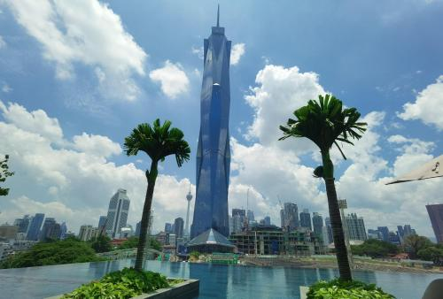

Merdeka 118 to drugi najwyższy budynek na świecie, położony w Kuala Lumpur, stolicy Malezji. Osiąga imponującą wysokość 678,9 metrów i ma 118 pięter, co czyni go jednym z najbardziej spektakularnych osiągnięć inżynieryjnych współczesnej architektury. Jego nazwa nawiązuje do malezyjskiego słowa "Merdeka," co oznacza "niepodległość," a liczba 118 odnosi się do liczby pięter budynku. Merdeka 118 jest symbolem nowoczesności i dążeń Malezji do dalszego rozwoju gospodarczego i technologicznego. Budowa Merdeka 118 rozpoczęła się w 2014 roku, a jej ukończenie planowano na 2023 rok. Projekt wieżowca został zrealizowany przez zespół architektów z australijskiej firmy Fender Katsalidis, a jego forma architektoniczna jest inspirowana kształtem diamentu. Struktura budynku łączy nowoczesne technologie z elementami tradycyjnej kultury Malezji, nawiązując do różnorodnych wpływów kulturowych tego regionu. Pod względem konstrukcji, Merdeka 118 została zaprojektowana tak, aby wytrzymać ekstremalne warunki atmosferyczne, w tym silne wiatry, trzęsienia ziemi oraz inne zagrożenia naturalne. Fundamenty budynku są wzmocnione betonowymi palami, co zapewnia stabilność ogromnej konstrukcji. Dzięki zastosowaniu nowoczesnych materiałów i technologii budowlanych, Merdeka 118 jest nie tylko wytrzymała, ale również energooszczędna. Budynek pełni różnorodne funkcje, mieszcząc w sobie przestrzenie biurowe, luksusowe apartamenty, hotele oraz centra rozrywkowe. Na szczycie wieżowca znajdzie się taras widokowy, oferujący panoramiczny widok na Kuala Lumpur oraz okoliczne tereny. Będzie to najwyżej położona platforma widokowa w południowo-wschodniej Azji, co czyni ją popularnym celem turystów i mieszkańców. W budynku zaplanowano również centrum handlowe, restauracje, sale konferencyjne oraz przestrzeń wystawową, która ma promować sztukę i kulturę Malezji. Wokół Merdeka 118 znajduje się kompleks parkowy, który stanowi przestrzeń rekreacyjną dla mieszkańców miasta. Projekt Merdeka 118 uwzględnia najnowsze trendy w zakresie zrównoważonego budownictwa. Budynek otrzymał certyfikaty LEED Platinum i GreenRE Platinum, potwierdzające jego wysoki standard w zakresie efektywności energetycznej i ochrony środowiska. Zastosowano zaawansowane technologie, takie jak systemy odzysku wody i energii, energooszczędne oświetlenie oraz inteligentne systemy zarządzania energią, które zmniejszają wpływ wieżowca na środowisko. Merdeka 118 ma ogromne znaczenie symboliczne dla Malezji, nawiązując do ważnych momentów w historii kraju, takich jak uzyskanie niepodległości w 1957 roku. Budynek został wzniesiony w pobliżu stadionu Merdeka, gdzie ogłoszono niepodległość Malezji, co nadaje mu głębszy kontekst historyczny. Jako nowy punkt orientacyjny Kuala Lumpur, Merdeka 118 nie tylko dodaje do panoramy miasta, ale również staje się globalnym symbolem rozwoju i ambicji Malezji. Dążenie do bycia liderem w regionie południowo-wschodniej Azji podkreśla znaczenie tego budynku jako ikony postępu i innowacji. Merdeka 118 to wyjątkowe połączenie nowoczesnej technologii, tradycji i zrównoważonego budownictwa. Jako drugi najwyższy budynek na świecie, stanowi symbol ambicji Malezji, zarówno pod względem architektury, jak i rozwoju gospodarczego. Budynek przyciąga uwagę nie tylko swoją wysokością, ale także eleganckim designem i znaczeniem kulturowym.
| Merdeka 118 | |
|---|---|
|  | |
| Podstawowe informacje | |
| Pełna nazwa | Merdeka 118 |
| Położenie | Kuala Lumpur |
| Wysokość | 678,9 metrów |
| Liczba pięter | 118 |
| Rok ukończenia | 2023 |
| Architekt | Fender Katsalidis |
| Koszt budowy | ok. 1 miliard USD |
| Funkcje | Hotele, Apartamenty, Biura |